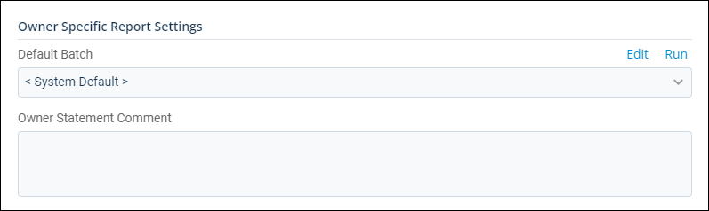
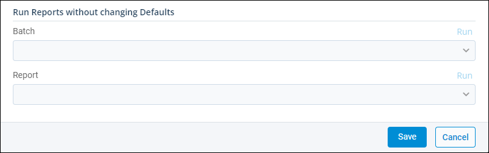

Source: https://rmxhelp.rentmanager.com/Topics/Express/CSH/Owners-Reports.htm
Owners Reports (Pop-Up)
The Owner Reports pop-up allows you to set up and run key reports for your owners. You can run individual reports or set up report batches and generate a collection of reports quickly.
Creating a report batch allows you to group and run reports together for individual owners. Once created, batches can be run manually as needed or scheduled to be automatically emailed to owners or other recipients. For more information, refer to Add an Owner Report Batch.
If most of your owners need the same set of financial reports, you can create a report batch and designate it as the Default owner report batch in system preferences. The benefits of doing this are you can view the reports before they are sent and the batches do not need to be updated when a new property is acquired. However, unlike other report batches, owner report batches cannot be scheduled and sent automatically; instead, they must be manually run and sent or published to Owner Web Access (OWA).
Related Privileges
| Group | Privilege | Column |
|---|---|---|
| Owners | Owners | View, Edit |
| Letter/Email Templates/Reports/Packets | Run reports | Enabled |
For more information, refer to Control User Access.
To view the owner's report pop-up, go to  arrow_forward Owners arrow_forward General arrow_forward Owners and select an owner from the list. Then, on the action bar to the right, click
arrow_forward Owners arrow_forward General arrow_forward Owners and select an owner from the list. Then, on the action bar to the right, click  arrow_forward Owner Reports.
arrow_forward Owner Reports.
Owner Specific Report Settings

Depending on the owner, you may need to customize what reports the owner receives. The following options display in the Owner Specific Report Settings section:
| Options | Descriptions |
|---|---|
|
Default Batch |
The default owner batch run for this specific owner. Throughout Rent Manager when the option to run an owner batch is selected, this is the batch run for the owner. Only batches that you own or were shared with you display. Additionally, a system-generated, owner-specific batch (e.g., Owner-Name Batch) displays as an option that, by default, contains only an owner statement. Related Preferences When <System Default> is selected, the batch designated as the Default owner report batch in system preferences is opened or generated. For more information, refer to Owner Report Settings (System Preferences). To edit what reports are in included in the selected batch, click Edit. If you edit any batch other than the owner-specific batch, the changes are applied to every owner using the report batch throughout Rent Manager. To generate the report batch for the owner, click Run. |
|
Owner Statement Comment |
An optional note or comment that is added to the owner statement, such as Thank you for your business. This applies only if the Owner Statement report is included in the batch. |
Run Reports Without Changing Defaults

In some instances, you may want to run a specific report right from the owner's detail page in Rent Manager. This section displays options for running one-off reports for owners without changing any of the defaults in system preferences. After making your selections, click Run to run the batch or report immediately. The following options display:
| Options | Descriptions | ||||||
|---|---|---|---|---|---|---|---|
|
Batch |
The specific batch you wish to run for the owner. Only batches that you own or were shared with you display. |
||||||
|
Report |
Related Privileges
Additionally, on the Reports tab, you must have access to the corresponding reports you wish to run. For more information, refer to Control User Access. The specific report you wish to run for the owner. |